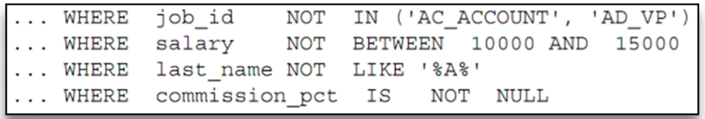

WHERE(조건문)절과 ORDER BY(정렬)절
☑️ 문법
SELECT * | {[DISTINCT] column | expression [alias], ...}
FROM table
[WHERE condition(s)]
[ORDER BY {column, expr, alias} [ASC | DESC]];
1) 1. WHERE절
- WHERE절을 사용해서 특정 칼럼에서 어떤 값을 가진 필드값만 찾아달라고 할 수 있다.
SELECT employee_id, last_name, job_id, department_id FROM employees WHERE department_id = 90; - employee_id, last_name, job_id, department_id 컬럼을 출력하는데 department_id가 90인 필드만 출력해라
SELECT last_name, job_id, department_id FROM employees WHERE last_name = 'Whalen'; - last_name, job_id, department_id 컬럼을 출력하는데 last_name이 ‘Whalen’인 필드만 출력해라
SELECT last_name FROM employees WHERE hire_date = '17-FEB-96'; - last_name 컬럼을 출력하는데 hire_date가 96년 2월 17일인 필드를 출력해라
- 날짜를 쓸 때엔 ‘DD-MM-YY’형식으로 쓴다.
SELECT last_name, salary
FROM employees
WHERE salary <= 3000;
- last_name, salary 컬럼을 출력하는데 salary가 3000 이하인 필드를 출력해라
SELECT last_name, salary FROM employees WHERE salary BETWEEN 2500 AND 3500; - last_name, salary 컬럼을 출력하는데 salary가 2500 ~ 3500 사이인 필드를 출력해라
SELECT employee_id, last_name, salary, manager_id FROM employees WHERE manager_id IN (100, 101, 201); - employee_id, last_name, salary, manager_id 컬럼을 출력하는데 manager_id가 100이거나 101이거나 201인 필드를 출력해라(or과 같은 역할)
SELECT last_name FROM employees WHERE last_name LIKE '_O%'; - last_name 컬럼을 출력하는데 last_name의 두번째 문자가 o인 필드를 출력해라
🔸 LIKE 비교연산자
- % : 0 char 또는 여러개 char
- _ : 반드시 1 char
- a로 시작되는 문자열 : ‘a%’
- a가 포함된 문자열 : ‘%a%’
- a로 끝나는 문자열 : ‘%a’
- 두번째 문자가 a인 문자열 : ‘_a%’
- 끝에서 세번째 문자가 a인 문자열 : ‘%a__‘
SELECT last_name, manager_id
FROM employees
WHERE manager_id IS NULL;
- last_name, manager_id 컬럼을 출력하는데 manager_id가 null인 필드를 출력해라
SELECT employee_id, last_name, job_id, salary
FROM employees
WHERE salary >= 10000
AND job_id LIKE '%MAN%';
- employee_id, last_name, job_id, salary 컬럼을 출력하는데 salary가 10000 이상이고 job_id에 MAN이 포함되는 필드를 출력해라
SELECT employee_id, last_name, job_id, salary
FROM employees
WHERE salary >= 10000
OR job_id LIKE '%MAN%';
- employee_id, last_name, job_id, salary 컬럼을 출력하는데 salary가 10000 이상이거나 job_id에 MAN이 포함되는 필드를 출력해라
🔸 비교연산자에 NOT(논리연산자)이 조합으로 사용된 경우

2. ORDER BY절
- ORDER BY절을 사용해서 특정 조건에 따라 필드값을 정렬해서 볼 수 있다.
- ASC : Ascending order, default 오름차순
- DESC : Descending order 내림차순
SELECT last_name, job_id, department_id, hire_date FROM employees ORDER BY hire_date DESC; - last_name, job_id, department_id, hire_date 컬럼을 출력하는데 hire_date의 내림차순으로 정렬해라
SELECT employee_id, last_name, salary*12 annsal
FROM employees
ORDER BY annsal;
- employee_id, last_name, salary12 annsal 컬럼을 출력하는데 salary12은 annsal이라는 Alias로 출력하고 annsal의 오름차순으로 정렬해라
SELECT last_name, job_id, department_id, hire_date
FROM employees
ORDER BY 3;
- last_name, job_id, department_id, hire_date 컬럼을 출력하는데 3번째 컬럼(department_id)의 오름차순으로 정렬해라
- 하지만 숫자로 표시하면 알아보기 힘들어서 추천하는 방법은 아니다.
SELECT last_name, department_id, salary
FROM employees
ORDER BY department_id, salary DESC;
- last_name, department_id, salary 컬럼을 출력하는데 department_id, salary 컬럼의 내림차순으로 정렬해라